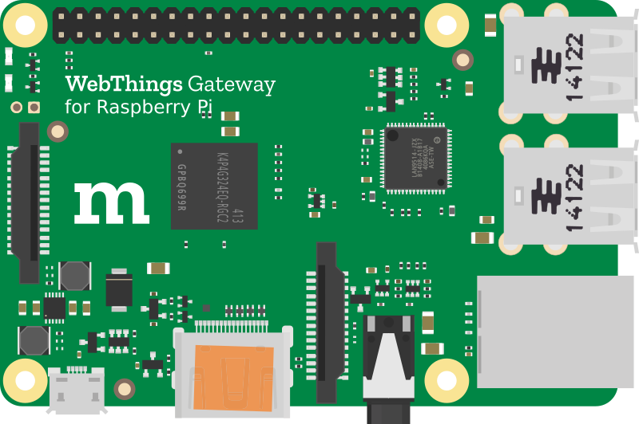

Monitor and control all your smart home devices via a unified web interface.
Create "if this then that" style rules to automate your home with a simple drag and drop interface.
Lay out all your devices on an interactive floorplan of your home for at-a-glance status and control.

Control your home with your voice or written commands via a chat style interface.
Add compatibiltiy with more devices and protocols with adapter add-ons.
Directly monitor and control your home over the web
Get your hands on a Raspberry Pi® single board computer. The latest Raspberry Pi 3 has WiFi and Bluetooth support built in, as well as access to GPIO ports for direct hardware connections. This is not essential as you can use alternative developer boards, or even your laptop or desktop computer, but it will currently provide the best experience.
To use your Web of Things gateway with other wireless protocols like ZigBee and Z-Wave you will need USB dongles. See the wiki for a list of compatible USB dongles and smart home devices.

Download the pre-built Raspberry Pi OS image from Mozilla and flash it onto an SD card. Please note that this is experimental pre-release software and at this prototype stage is not ready for production use. It is intended as an early preview for hackers, makers and web developers to get their hands on with the Web of Things.
Download 0.5.3

(Alternatively, if you'd prefer to just try out the software on your PC you can follow the instructions on GitHub to checkout the code and build it yourself.)
For a more detailed How-To guide and a tour of the gateway's features, see our blog post on Mozilla Hacks.